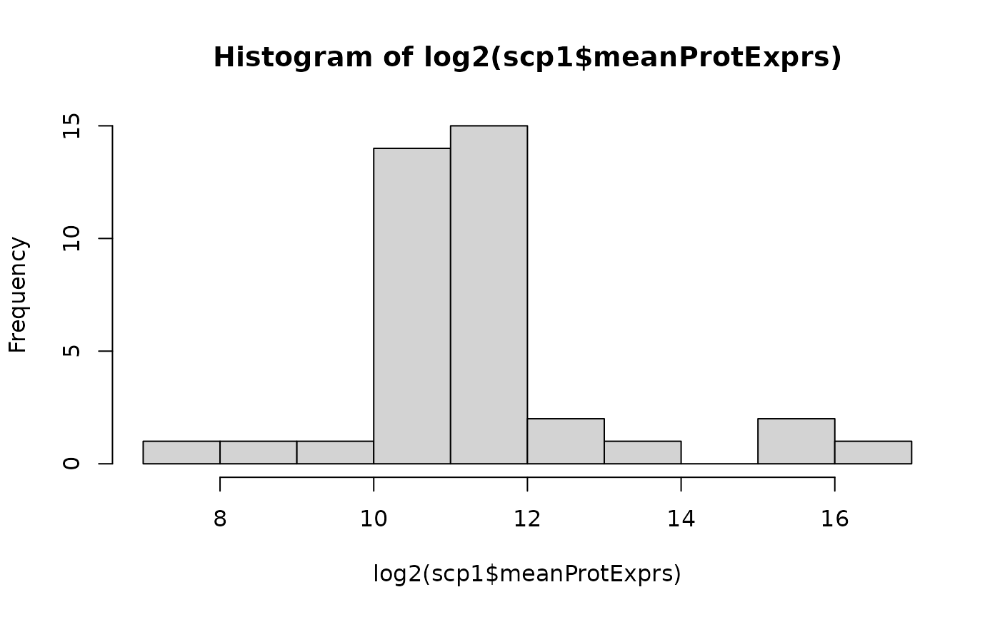
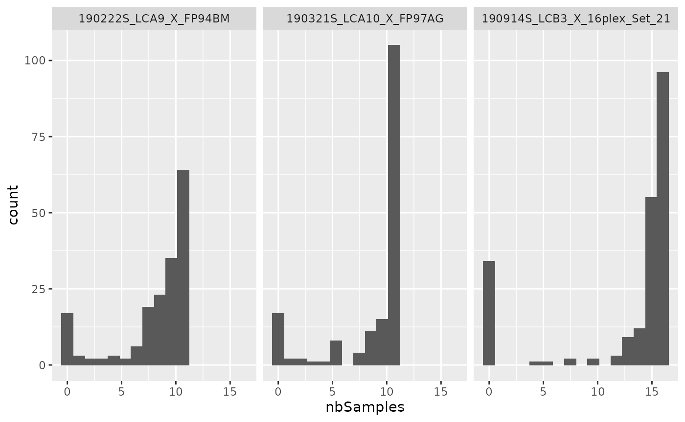

Advanced usage of `scp`
Laurent Gatto
Christophe Vanderaa
12 November 2026
Source:vignettes/advanced.Rmd
advanced.RmdAbout this vignette
This vignette is dedicated to advanced users and to method
developers. It assumes that you are already familiar with
QFeatures and scp and that you are looking for
more flexibility in the analysis of your single-cell proteomics (SCP)
data. In fact, scp provides wrapper functions around
generic functions and metrics. However, advanced users may want to apply
or develop their own features. The QFeatures class offers a
flexible data container while guaranteeing data consistency.
In this vignette, you will learn how to:
- Modify the quantitative data
- Modify the sample annotations
- Modify the feature annotations
- Create a new function for
scp
As a general guideline, you can add/remove/update data in a
QFeatures in 4 main steps:
- Gather the data to change and other required data involved in the processing.
- Apply the transformation/computation.
- Insert the changes in the
QFeaturesobject. - Make sure the updated
QFeaturesobject is still valid.
To illustrate the different topics, we will load the
scp1 example data.
library(scp)
data("scp1")
scp1
#> An instance of class QFeatures (type: bulk) with 5 sets:
#>
#> [1] 190321S_LCA10_X_FP97AG: SummarizedExperiment with 166 rows and 11 columns
#> [2] 190222S_LCA9_X_FP94BM: SummarizedExperiment with 176 rows and 11 columns
#> [3] 190914S_LCB3_X_16plex_Set_21: SummarizedExperiment with 215 rows and 16 columns
#> [4] peptides: SummarizedExperiment with 539 rows and 38 columns
#> [5] proteins: SummarizedExperiment with 292 rows and 38 columnsModify the quantitative data
To illustrate how to modify quantitative data, we will implement a
normByType function that will normalize the feature (row)
for each cell type separately. This function is probably not relevant
for a real case analysis, but it provides a good example of a custom
data processing. The process presented in this section is applicable to
any custom function that takes at least a matrix-like
object as input and returns a matrix-like object as output.
normByType <- function(x, type) {
## Check argument
stopifnot(length(type) == ncol(x))
## Normalize for each type separately
for (i in unique(type)) {
## Get normalization factor
nf <- rowMedians(x[, type == i], na.rm = TRUE)
## Perform normalization
x[, type == i] <- x[, type == i] / nf
}
## Return normalized data
x
}Suppose we want to apply the function to the proteins
assay, we need to first extract that assay. We here need to transfer the
sample annotations from the QFeatures object to the
extracted SingleCellExperiment in order to get the sample
types required by the normByType function. We therefore use
getWithColData.
sce <- getWithColData(scp1, "proteins")
sce
#> class: SummarizedExperiment
#> dim: 292 38
#> metadata(0):
#> assays(2): assay aggcounts
#> rownames(292): A1A519 A5D8V6 ... REV__CON__Q32PI4 REV__CON__Q3MHN5
#> rowData names(9): protein Match.time.difference ...
#> Potential.contaminant .n
#> colnames(38): 190321S_LCA10_X_FP97AGRI1 190321S_LCA10_X_FP97AGRI2 ...
#> 190914S_LCB3_X_16plex_Set_21RI15 190914S_LCB3_X_16plex_Set_21RI16
#> colData names(7): Set Channel ... sortday digestNext, we can apply the data transformation to the quantitative data.
As mentioned above, our function expects a matrix-like object as an
input, so we use the assay function. We then update the
SingleCellExperiment object.
We are now faced with 2 possibilities: either we want to create a new assay or we want to overwrite an existing assay. In both cases we need to make sure your data is still valid after data transformation.
Create a new assay
Creating a new assay has the advantage that you don’t modify an existing assay and hence limit the risk of introducing inconsistency in the data and avoid losing intermediate steps of the data processing.
We add the transformed assay using the addAssay
function, then link the parent assay to the transformed assay using
addAssayLinkOneToOne. Note that if each row name in the
parent assay does not match exactly one row in the child assay, you can
also use addAssayLink that will require a linking variable
in the rowData.
scp1 <- addAssay(scp1, sce, name = "proteinsNorm")
scp1 <- addAssayLinkOneToOne(scp1, from = "proteins", to = "proteinsNorm")
scp1
#> An instance of class QFeatures (type: bulk) with 6 sets:
#>
#> [1] 190321S_LCA10_X_FP97AG: SummarizedExperiment with 166 rows and 11 columns
#> [2] 190222S_LCA9_X_FP94BM: SummarizedExperiment with 176 rows and 11 columns
#> [3] 190914S_LCB3_X_16plex_Set_21: SummarizedExperiment with 215 rows and 16 columns
#> [4] peptides: SummarizedExperiment with 539 rows and 38 columns
#> [5] proteins: SummarizedExperiment with 292 rows and 38 columns
#> [6] proteinsNorm: SummarizedExperiment with 292 rows and 38 columnsOverwrite an existing assay
Overwriting an existing assay has the advantage to limit the memory consumption as compared to adding a new assay. You can overwrite an assay simply by replacing the target assay in its corresponding slot.
scp1[["proteins"]] <- sceCheck for validity
Applying custom changes to the data increases the risk for data
inconsistencies. You can however verify that a QFeatures
object is still valid after some processing thanks to the
validObject function.
validObject(scp1)
#> [1] TRUEIf the function detects no issues in the data, it will return
TRUE. Otherwise the function will throw an informative
error that should guide the user to identifying the issue.
Modify the sample annotations
To illustrate how to modify the sample annotations, we will compute
the average expression in each sample and include to the
colData of the QFeatures object. This is
typically performed when computing QC metrics for sample filtering. So,
we first extract the required data, in this case the quantitative
values, and compute the sample-wise average protein expression.
m <- assay(scp1, "proteins")
meanExprs <- colMeans(m, na.rm = TRUE)
meanExprs
#> 190321S_LCA10_X_FP97AGRI1 190321S_LCA10_X_FP97AGRI2
#> 45368.3628 7566.8782
#> 190321S_LCA10_X_FP97AGRI3 190321S_LCA10_X_FP97AGRI4
#> 3271.0402 2158.4230
#> 190321S_LCA10_X_FP97AGRI5 190321S_LCA10_X_FP97AGRI6
#> 1162.3936 1835.7939
#> 190321S_LCA10_X_FP97AGRI7 190321S_LCA10_X_FP97AGRI8
#> 1293.4738 1415.4205
#> 190321S_LCA10_X_FP97AGRI9 190321S_LCA10_X_FP97AGRI10
#> 1965.6531 1264.4064
#> 190321S_LCA10_X_FP97AGRI11 190222S_LCA9_X_FP94BMRI1
#> 1238.5979 48901.4654
#> 190222S_LCA9_X_FP94BMRI2 190222S_LCA9_X_FP94BMRI3
#> 5189.5912 2802.1850
#> 190222S_LCA9_X_FP94BMRI4 190222S_LCA9_X_FP94BMRI5
#> 1204.2350 715.7667
#> 190222S_LCA9_X_FP94BMRI6 190222S_LCA9_X_FP94BMRI7
#> 1032.7122 403.8267
#> 190222S_LCA9_X_FP94BMRI8 190222S_LCA9_X_FP94BMRI9
#> 1089.0548 1076.2613
#> 190222S_LCA9_X_FP94BMRI10 190222S_LCA9_X_FP94BMRI11
#> 1572.3337 1186.4431
#> 190914S_LCB3_X_16plex_Set_21RI1 190914S_LCB3_X_16plex_Set_21RI2
#> 96881.8350 2731.9430
#> 190914S_LCB3_X_16plex_Set_21RI3 190914S_LCB3_X_16plex_Set_21RI4
#> 8208.1958 208.2857
#> 190914S_LCB3_X_16plex_Set_21RI5 190914S_LCB3_X_16plex_Set_21RI6
#> 3209.7730 2014.4889
#> 190914S_LCB3_X_16plex_Set_21RI7 190914S_LCB3_X_16plex_Set_21RI8
#> 2897.1103 3006.6741
#> 190914S_LCB3_X_16plex_Set_21RI9 190914S_LCB3_X_16plex_Set_21RI10
#> 2760.8564 2549.9348
#> 190914S_LCB3_X_16plex_Set_21RI11 190914S_LCB3_X_16plex_Set_21RI12
#> 2388.5289 2533.8006
#> 190914S_LCB3_X_16plex_Set_21RI13 190914S_LCB3_X_16plex_Set_21RI14
#> 2134.5615 3125.1980
#> 190914S_LCB3_X_16plex_Set_21RI15 190914S_LCB3_X_16plex_Set_21RI16
#> 3276.5618 3195.8827Next, we insert the computed averages into the colData.
You need to make sure to match sample names because an extracted assay
may not contain all samples and may be in a different order compared to
the colData.
The new sample variable meanProtExprs is now accessible
for filtering or plotting. The $ operator makes it
straightforward to access the new data.

To make sure that the process did not corrupt the
colData, we advise to verify the data is still valid.
validObject(scp1)
#> [1] TRUEModify the feature annotations
We will again illustrate how to modify the feature annotations with an example. We here demonstrate how to add the number of samples in which each feature is detected for the three first assays (PSM assays). The challenge here is that the metric needs to be computed for each assay separately and inserted in the corresponding assay.
We will take advantage of the replacement function for
rowData as implemented in QFeatures. It
expects a list-like object where names indicate in which assays we want
to modify the rowData and each element contains a table
with the replacement values.
We therefore compute the metrics for each assay separately and store
the results in a named List.
## Initialize the List object that will store the computed values
res <- List()
## We compute the metric for the first 3 assays
for (i in 1:3) {
## We get the quantitative values for the current assay
m <- assay(scp1[[i]])
## We compute the number of samples in which each features is detected
n <- rowSums(!is.na(m) & m != 0)
## We store the result as a DataFrame in the List
res[[i]] <- DataFrame(nbSamples = n)
}
names(res) <- names(scp1)[1:3]
res
#> List of length 3
#> names(3): 190321S_LCA10_X_FP97AG 190222S_LCA9_X_FP94BM 190914S_LCB3_X_16plex_Set_21
res[[1]]
#> DataFrame with 166 rows and 1 column
#> nbSamples
#> <numeric>
#> PSM3773 11
#> PSM9078 11
#> PSM9858 11
#> PSM11744 11
#> PSM21752 0
#> ... ...
#> PSM732069 11
#> PSM735396 11
#> PSM744756 10
#> PSM745037 11
#> PSM745130 11Now that we have a List of DataFrames, we
can update the object.
rowData(scp1) <- resThe new feature variable nbSamples is now accessible for
filtering or plotting. The rbindRowData function
facilitates the access the new data.
library("ggplot2")
rd <- rbindRowData(scp1, i = 1:3)
ggplot(data.frame(rd)) +
aes(x = nbSamples) +
geom_histogram(bins = 16) +
facet_wrap(~ assay)
To make sure that the process did not corrupt the
rowData in any assay, we advise to verify the data is still
valid.
validObject(scp1)
#> [1] TRUECreate a new function for scp
The modifying data in a QFeatures involves a
multiple-step process. Creating a wrapper function that would take care
of those different steps in a single line of code is a good habit to
reduce the length of analysis scripts and hence making it easier to
understand and less error-prone.
We will wrap the last example in a new function that we call
computeNbDetectedSamples.
computeNbDetectedSamples <- function(object, i) {
res <- List()
for (ii in i) {
m <- assay(object[[ii]])
n <- rowSums(!is.na(m) & m != 0)
res[[ii]] <- DataFrame(nbSamples = n)
}
names(res) <- names(object)[i]
rowData(object) <- res
stopifnot(validObject(object))
object
}Thanks to this new function, the previous section now simply boils down to running:
scp1 <- computeNbDetectedSamples(scp1, i = 1:3)Keep in mind a few recommendations when creating a new function for
scp:
- The function should take a
QFeaturesobject as input (and more arguments if needed) and return aQFeaturesobject as output. This will make workflows much easier to understand. - Allow user to select assays (if required) either as numeric, character, or logical.
- Use conventional argument names: when naming an argument, try to
match the names that already exist. For instance, selecting assays is
passed through the
iargument, selectingrowDatavariables is passed throughrowvarsand selectingcolDatavariables is passed throughcolvars. - Follow the
rformassspectrometrycoding style
What’s next?
So you developed a new metric or method and believe it might benefit
the community? We would love to hear about your improvements and
eventually include your new functionality into scp or
associate your new package to our documentation. Please, raise an issue
in our Github repository to suggest your improvements or, better, submit
your code as a pull
request.
Session information
R version 4.6.1 (2026-06-24)
Platform: x86_64-pc-linux-gnu
Running under: Ubuntu 24.04.5 LTS
Matrix products: default
BLAS: /usr/lib/x86_64-linux-gnu/openblas-pthread/libblas.so.3
LAPACK: /usr/lib/x86_64-linux-gnu/openblas-pthread/libopenblasp-r0.3.26.so; LAPACK version 3.12.0
locale:
[1] LC_CTYPE=en_US.UTF-8 LC_NUMERIC=C
[3] LC_TIME=en_US.UTF-8 LC_COLLATE=en_US.UTF-8
[5] LC_MONETARY=en_US.UTF-8 LC_MESSAGES=en_US.UTF-8
[7] LC_PAPER=en_US.UTF-8 LC_NAME=C
[9] LC_ADDRESS=C LC_TELEPHONE=C
[11] LC_MEASUREMENT=en_US.UTF-8 LC_IDENTIFICATION=C
time zone: UTC
tzcode source: system (glibc)
attached base packages:
[1] stats4 stats graphics grDevices utils datasets methods
[8] base
other attached packages:
[1] ggplot2_4.0.3 scp_1.23.4
[3] QFeatures_1.23.2 MultiAssayExperiment_1.39.1
[5] SummarizedExperiment_1.43.0 Biobase_2.73.2
[7] GenomicRanges_1.65.4 Seqinfo_1.3.2
[9] IRanges_2.47.5 S4Vectors_0.51.10
[11] BiocGenerics_0.59.12 generics_0.1.4
[13] MatrixGenerics_1.25.0 matrixStats_1.5.0
[15] BiocStyle_2.41.0
loaded via a namespace (and not attached):
[1] tidyselect_1.2.1 dplyr_1.2.1
[3] farver_2.1.2 S7_0.2.2
[5] fastmap_1.2.0 SingleCellExperiment_1.35.2
[7] lazyeval_0.2.3 nipals_1.2
[9] digest_0.6.39 lifecycle_1.0.5
[11] cluster_2.1.8.3 ProtGenerics_1.45.0
[13] magrittr_2.0.5 compiler_4.6.1
[15] rlang_1.3.0 sass_0.4.10
[17] tools_4.6.1 igraph_2.3.4
[19] yaml_2.3.12 knitr_1.52
[21] labeling_0.4.3 S4Arrays_1.13.2
[23] htmlwidgets_1.6.4 DelayedArray_0.39.8
[25] plyr_1.8.9 RColorBrewer_1.1-3
[27] abind_1.4-8 withr_3.0.3
[29] purrr_1.2.2 desc_1.4.3
[31] grid_4.6.1 scales_1.4.0
[33] MASS_7.3-66 cli_3.6.6
[35] rmarkdown_2.32 ragg_1.5.2
[37] otel_0.2.0 metapod_1.21.0
[39] reshape2_1.4.5 BiocBaseUtils_1.15.1
[41] cachem_1.1.0 stringr_1.6.0
[43] AnnotationFilter_1.37.0 BiocManager_1.30.27
[45] XVector_0.53.0 vctrs_0.7.3
[47] Matrix_1.7-6 jsonlite_2.0.0
[49] slam_0.1-56 bookdown_0.48
[51] IHW_1.41.0 ggrepel_0.9.8
[53] clue_0.3-68 systemfonts_1.3.2
[55] tidyr_1.3.2 jquerylib_0.1.4
[57] glue_1.8.1 pkgdown_2.2.1.9000
[59] stringi_1.8.9 gtable_0.3.6
[61] lpsymphony_1.41.0 tibble_3.3.1
[63] pillar_1.11.1 htmltools_0.5.9
[65] R6_2.6.1 textshaping_1.0.5
[67] evaluate_1.0.5 lattice_0.23-1
[69] bslib_0.12.0 Rcpp_1.1.2
[71] fdrtool_1.2.18 SparseArray_1.13.4
[73] xfun_0.62 MsCoreUtils_1.25.4
[75] fs_2.1.0 pkgconfig_2.0.3 License
This vignette is distributed under a CC BY-SA license.